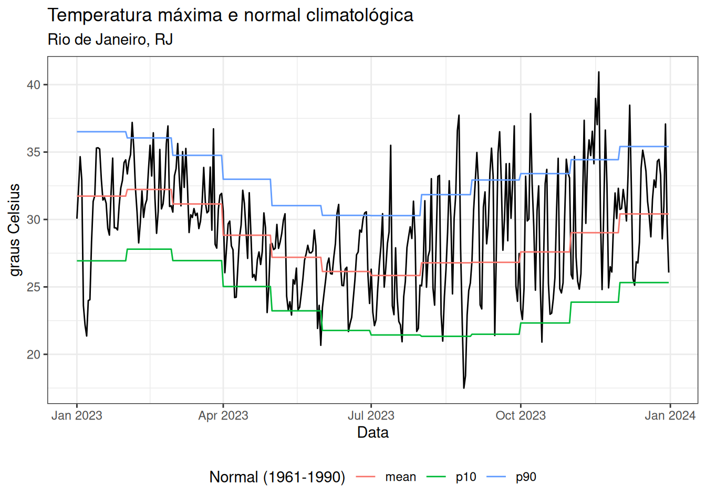

library(dplyr)
library(lubridate)
library(arrow)
library(readr)
library(climindi) # http://rfsaldanha.github.io/climindi/
library(zendown) # https://rfsaldanha.github.io/zendown/Introdução
Normais climatológicas são médias de variáveis climáticas observadas para um determinado período, geralmente meses, em um intervalo de 30 anos. As normais costumam ser usadas como referência de comparação com condições recentes ou atuais, sendo úteis para reconhecer anomalias e caracterizar impactos do aquecimento global.
As normais geralmente são calculadas com dados de estações meteorológicas de superfície, mantidas por instituições meteorológicas governamentais, e sua distribuição no território pode ser escassa ou irregular, como no Brasil. Assim, a disponibilidade de normais climatológicas para diferentes regiões e divisões administrativas, como municípios, é difícil de obter.
Proponho aqui um método para calcular normais climatológicas mensais e indicadores climáticos agregados mensalmente usando bases de reanálise climática.
Dica
Com pressa? Vá direto para a seção de baixar ;-)
Métodos
Uma normal climatológica pode ser calculada com dados de diferentes fontes, incluindo sensores de sensoriamento remoto e “médias de área ou pontos em bases em grade” (WMO 2017). Algumas bases climatológicas em grade estão disponíveis para o território brasileiro, incluindo o ERA5-Land do Copernicus (Muñoz-Sabater et al. 2021) e a base BR-DWGD (Xavier et al. 2022), oferecendo vários indicadores climatológicos em séries longas e com atualizações contínuas.
Alguns métodos de pesquisa exigem que dados climáticos sejam agregados nas mesmas unidades espaciais e temporais de outros dados usados em modelos estatísticos, procedimento comum em estudos de epidemiologia e economia. Para lidar com essa necessidade, dados espaciais em grade podem ser agregados usando estatísticas zonais (Saldanha et al. 2024).
As bases atualizadas de estatísticas zonais climáticas do ERA5-Land para municípios brasileiros foram usadas para calcular normais climatológicas e indicadores mensais.
Para isso, foi criado um pacote R chamado {climindi}. O pacote fornece funções auxiliares para calcular normais climatológicas e outros indicadores agregados de forma tidy.
Indicadores normais
O pacote {climindi} calcula média, percentil 10 e percentil 90 como normais climatológicas.
Indicadores agregados
O pacote {climindi} apresenta funções para calcular as seguintes estatísticas para dados agregados no tempo: contagem de pontos, média, mediana, desvio padrão, erro padrão, valores máximo e mínimo, percentis 10, 25, 75 e 90, além de indicadores específicos por variável, listados abaixo.
- Precipitação
- Períodos chuvosos: contagem de ocorrências com 3 e 5 ou mais dias consecutivos com chuva acima do valor médio da normal climatológica
- Contagem de dias com precipitação acima de 1mm, 5mm, 10mm, 50mm e 100mm
- Contagem de sequências de 3, 5, 10, 15, 20 e 25 dias ou mais sem precipitação
- Temperatura máxima
- Ondas de calor: contagem de ocorrências com 3 e 5 ou mais dias consecutivos com temperatura máxima acima da normal climatológica mais 5 graus Celsius
- Dias quentes: contagem de dias em que a temperatura máxima está acima do percentil 90 da normal
- Contagem de dias com temperaturas maiores ou iguais a 25, 30, 35 e 40 graus Celsius
- Temperatura mínima
- Ondas de frio: contagem de ocorrências com 3 e 5 ou mais dias consecutivos com temperatura mínima abaixo da normal climatológica menos 5 graus Celsius
- Dias frios: contagem de dias em que a temperatura mínima está abaixo do percentil 10 da normal
- Contagem de dias com temperaturas menores ou iguais a 0, 5, 10, 15 e 20 graus Celsius
- Umidade relativa
- Contagem de ocorrências de períodos secos com 3 e 5 ou mais dias consecutivos com umidade relativa abaixo da normal climatológica menos 10%
- Contagem de ocorrências de períodos úmidos com 3 e 5 ou mais dias consecutivos com umidade relativa acima da normal climatológica mais 10%
- Contagem de dias secos, quando a umidade relativa está abaixo do percentil 10 da normal
- Contagem de dias úmidos, quando a umidade relativa está acima do percentil 90 da normal
- Contagem de dias com umidade relativa entre 21% e 30% (nível de atenção)
- Contagem de dias com umidade relativa entre 12% e 20% (nível de alerta)
- Contagem de dias com umidade relativa abaixo de 12% (nível de emergência)
- Velocidade do vento
- Contagem de sequências de 3 e 5 dias ou mais com velocidade do vento abaixo da normal climatológica média
- Contagem de sequências de 3 e 5 dias ou mais com velocidade do vento acima da normal climatológica média
- Evapotranspiração
- Contagem de sequências de 3 e 5 dias ou mais com evapotranspiração abaixo da normal climatológica média
- Contagem de sequências de 3 e 5 dias ou mais com evapotranspiração acima da normal climatológica média
- Radiação solar
- Contagem de sequências de 3 e 5 dias ou mais com radiação solar abaixo da normal climatológica
- Contagem de sequências de 3 e 5 dias ou mais com radiação solar acima da normal climatológica
Importante
As funções do pacote precisam dos dados nas unidades corretas. Certifique-se de que seus dados estejam na unidade correta antes de executar as funções.
Fonte dos dados
As estatísticas zonais para municípios brasileiros calculadas com o ERA5-Land do Copernicus estão descritas aqui. Podemos usar o pacote {zendown} para baixar os arquivos diretamente do Zenodo.
Usaremos os dados de 1961 a 1990 para calcular as normais climatológicas e os dados de 1991 a 2024 para calcular indicadores climatológicos mensais.
Pacotes
Aviso
Para realizar esses cálculos, precisei aumentar a variável de ambiente R_MAX_VSIZE para 100 GB, conforme explicado aqui.
Precipitação (mm)
Dados
prec_1950_2022 <- zen_file(10036212, "total_precipitation_sum.parquet")
prec_2023 <- zen_file(10947952, "total_precipitation_sum.parquet")
prec_2024 <- zen_file(15748125, "total_precipitation_sum.parquet")
prec_data <- open_dataset(sources = c(prec_1950_2022, prec_2023, prec_2024)) |>
# Average precipitation
filter(name == "total_precipitation_sum_mean") |>
# Time filter
filter(date >= as.Date("1961-01-01")) |>
filter(date <= as.Date("2024-12-31")) |>
# Unit conversion from m to mm
mutate(value = round(value * 1000, digits = 2)) |>
select(-name) |>
arrange(code_muni, date) |>
collect()Normal climatológica
prec_normal <- prec_data |>
# Identify month
mutate(month = month(date)) |>
# Group by id variable and month
group_by(code_muni, month) |>
# Compute normal
summarise_normal(
date_var = date,
value_var = value,
year_start = 1961,
year_end = 1990
) |>
# Ungroup
ungroup()Indicadores climatológicos
prec_indi <- prec_data |>
# Identify year
mutate(year = year(date)) |>
# Identify month
mutate(month = month(date)) |>
# Filter year
filter(year >= 1991) |>
# Group by id variable, year and month
group_by(code_muni, year, month) |>
# Compute precipitation indicators
summarise_precipitation(
value_var = value,
normals_df = prec_normal
) |>
# Ungroup
ungroup()Exportação
write_parquet(x = prec_normal, sink = "prec_normal.parquet")
write_csv2(x = prec_normal, file = "prec_normal.csv")
write_parquet(x = prec_indi, sink = "prec_indi.parquet")
write_csv2(x = prec_indi, file = "prec_indi.csv")Temperatura máxima (°C)
Dados
tmax_1950_2022 <- zen_file(10036212, "2m_temperature_max.parquet")
tmax_2023 <- zen_file(10947952, "2m_temperature_max.parquet")
tmax_2024 <- zen_file(15748125, "2m_temperature_max.parquet")
tmax_data <- open_dataset(sources = c(tmax_1950_2022, tmax_2023, tmax_2024)) |>
# Average maximum temperature
filter(name == "2m_temperature_max_mean") |>
# Time filter
filter(date >= as.Date("1961-01-01")) |>
filter(date <= as.Date("2024-12-31")) |>
# Unit conversion form Kelvin to graus Celsius
mutate(value = round(value - 273.15, digits = 2)) |>
select(-name) |>
arrange(code_muni, date) |>
collect()Normal climatológica
tmax_normal <- tmax_data |>
# Identify month
mutate(month = month(date)) |>
# Group by id variable and month
group_by(code_muni, month) |>
# Compute normal
summarise_normal(
date_var = date,
value_var = value,
year_start = 1961,
year_end = 1990
) |>
# Ungroup
ungroup()Indicadores climatológicos
tmax_indi <- tmax_data |>
# Identify year
mutate(year = year(date)) |>
# Identify month
mutate(month = month(date)) |>
# Filter year
filter(year >= 1991) |>
# Group by id variable, year and month
group_by(code_muni, year, month) |>
# Compute precipitation indicators
summarise_temp_max(
value_var = value,
normals_df = tmax_normal
) |>
# Ungroup
ungroup()Exportação
write_parquet(x = tmax_normal, sink = "tmax_normal.parquet")
write_csv2(x = tmax_normal, file = "tmax_normal.csv")
write_parquet(x = tmax_indi, sink = "tmax_indi.parquet")
write_csv2(x = tmax_indi, file = "tmax_indi.csv")Temperatura mínima (°C)
Dados
tmin_1950_2022 <- zen_file(10036212, "2m_temperature_min.parquet")
tmin_2023 <- zen_file(10947952, "2m_temperature_min.parquet")
tmin_2024 <- zen_file(15748125, "2m_temperature_min.parquet")
tmin_data <- open_dataset(sources = c(tmin_1950_2022, tmin_2023, tmin_2024)) |>
# Average minimum temperature
filter(name == "2m_temperature_min_mean") |>
# Filter period
filter(date >= as.Date("1961-01-01")) |>
filter(date <= as.Date("2024-12-31")) |>
# Unit conversion
mutate(value = round(value - 273.15, digits = 2)) |>
select(-name) |>
arrange(code_muni, date) |>
collect()Normal climatológica
tmin_normal <- tmin_data |>
# Identify month
mutate(month = month(date)) |>
# Group by id variable and month
group_by(code_muni, month) |>
# Compute normal
summarise_normal(
date_var = date,
value_var = value,
year_start = 1961,
year_end = 1990
) |>
# Ungroup
ungroup()Indicadores climatológicos
tmin_indi <- tmin_data |>
# Identify year
mutate(year = year(date)) |>
# Identify month
mutate(month = month(date)) |>
# Filter year
filter(year >= 1991) |>
# Group by id variable, year and month
group_by(code_muni, year, month) |>
# Compute precipitation indicators
summarise_temp_min(
value_var = value,
normals_df = tmin_normal
) |>
# Ungroup
ungroup()Exportação
write_parquet(x = tmin_normal, sink = "tmin_normal.parquet")
write_csv2(x = tmin_normal, file = "tmin_normal.csv")
write_parquet(x = tmin_indi, sink = "tmin_indi.parquet")
write_csv2(x = tmin_indi, file = "tmin_indi.csv")Velocidade do vento a 2 m de altura (m/s)
Dados
wu_1950_2022 <- zen_file(10036212, "10m_u_component_of_wind_mean.parquet")
wu_2023 <- zen_file(10947952, "10m_u_component_of_wind_mean.parquet")
wu_2024 <- zen_file(15748125, "10m_u_component_of_wind_mean.parquet")
wv_1950_2022 <- zen_file(10036212, "10m_v_component_of_wind_mean.parquet")
wv_2023 <- zen_file(10947952, "10m_v_component_of_wind_mean.parquet")
wv_2024 <- zen_file(15748125, "10m_v_component_of_wind_mean.parquet")
wu_data <- open_dataset(sources = c(wu_1950_2022, wu_2023, wu_2024)) |>
# Average minimum temperature
filter(name == "10m_u_component_of_wind_mean_mean") |>
# Filter period
filter(date >= as.Date("1961-01-01")) |>
filter(date <= as.Date("2024-12-31")) |>
select(-name) |>
arrange(code_muni, date) |>
collect()
wv_data <- open_dataset(sources = c(wv_1950_2022, wv_2023, wv_2024)) |>
# Average minimum temperature
filter(name == "10m_u_component_of_wind_mean_mean") |>
# Filter period
filter(date >= as.Date("1961-01-01")) |>
filter(date <= as.Date("2024-12-31")) |>
select(-name) |>
arrange(code_muni, date) |>
collect()
u2_data <- zen_file(13906834, "u2_3.2.3.parquet") |>
open_dataset() |>
filter(name == "u2_3.2.3_mean") |>
filter(date >= as.Date("1961-01-01")) |>
filter(date <= as.Date("2024-12-31")) |>
select(-name) |>
collect()Normal climatológica
u2_normal <- u2_data |>
# Identify month
mutate(month = month(date)) |>
# Group by id variable and month
group_by(code_muni, month) |>
# Compute normal
summarise_normal(
date_var = date,
value_var = value,
year_start = 1961,
year_end = 1990
) |>
# Ungroup
ungroup()Indicadores climatológicos
u2_indi <- u2_data |>
# Identify year
mutate(year = year(date)) |>
# Identify month
mutate(month = month(date)) |>
# Filter year
filter(year >= 1991) |>
# Group by id variable, year and month
group_by(code_muni, year, month) |>
# Compute precipitation indicators
summarise_windspeed(
value_var = value,
normals_df = u2_normal
) |>
# Ungroup
ungroup()Exportação
write_parquet(x = u2_normal, sink = "u2_normal.parquet")
write_csv2(x = u2_normal, file = "u2_normal.csv")
write_parquet(x = u2_indi, sink = "u2_indi.parquet")
write_csv2(x = u2_indi, file = "u2_indi.csv")Umidade relativa (%)
Dados
rh_data <- zen_file(13906834, "RH_3.2.3.parquet") |>
open_dataset() |>
filter(name == "RH_3.2.3_mean") |>
filter(date >= as.Date("1961-01-01")) |>
filter(date <= as.Date("2024-12-31")) |>
select(-name) |>
collect()Normal
rh_normal <- rh_data |>
# Identify month
mutate(month = month(date)) |>
# Group by id variable and month
group_by(code_muni, month) |>
# Compute normal
summarise_normal(
date_var = date,
value_var = value,
year_start = 1961,
year_end = 1990
) |>
# Ungroup
ungroup()Indicadores
rh_indi <- rh_data |>
# Identify year
mutate(year = year(date)) |>
# Identify month
mutate(month = month(date)) |>
# Filter year
filter(year >= 1991) |>
# Group by id variable, year and month
group_by(code_muni, year, month) |>
# Compute precipitation indicators
summarise_rel_humidity(
value_var = value,
normals_df = rh_normal
) |>
# Ungroup
ungroup()Exportação
write_parquet(x = rh_normal, sink = "rh_normal.parquet")
write_csv2(x = rh_normal, file = "rh_normal.csv")
write_parquet(x = rh_indi, sink = "rh_indi.parquet")
write_csv2(x = rh_indi, file = "rh_indi.csv")Resultados e base de dados
As normais climatológicas e os indicadores agregados dos municípios brasileiros podem ser baixados do Zenodo nos formatos CSV e parquet. Clique no link abaixo para acessar e baixar os dados.

Também é possível baixar a base diretamente pelo R usando o pacote {zendown}.
Vamos verificar alguns resultados.
Temperatura máxima, Rio de Janeiro, RJ, 2023
Observado e normal
tmax_data <- zen_file(13906834, "Tmax_3.2.3.parquet") |>
open_dataset() |>
filter(name == "Tmax_3.2.3_mean") |>
filter(code_muni == 3304557) |>
filter(date >= as.Date("2023-01-01")) |>
filter(date <= as.Date("2023-12-31")) |>
select(-name) |>
collect()
tmax_normal <- zen_file(15519719, "tmax_normal.parquet") |>
open_dataset() |>
filter(code_muni == 3304557) |>
collect()library(ggplot2)
library(tidyr)
tmax_normal_exp <- tmax_normal |>
mutate(date = as_date(paste0("2023-", month, "-01"))) |>
group_by(month) %>%
expand(
date = seq.Date(
floor_date(date, unit = "month"),
ceiling_date(date, unit = "month") - days(1),
by = "day"
),
normal_mean,
normal_p10,
normal_p90
) |>
pivot_longer(cols = starts_with("normal_")) |>
mutate(name = substr(name, 8, 100))
ggplot() +
geom_line(data = tmax_data, aes(x = date, y = value)) +
geom_line(data = tmax_normal_exp, aes(x = date, y = value, color = name)) +
theme_bw() +
labs(
title = "Temperatura máxima e normal climatológica",
subtitle = "Rio de Janeiro, RJ",
color = "Normal (1961-1990)",
x = "Data",
y = "graus Celsius"
) +
theme(legend.position = "bottom", legend.direction = "horizontal")
Indicadores
library(gt)
zen_file(15519719, "tmax_indi.parquet") |>
open_dataset() |>
filter(code_muni == 3304557) |>
filter(year == 2023) |>
select(-code_muni, -year) |>
collect() |>
gt() |>
fmt_number(
columns = where(is.double),
decimals = 2,
use_seps = FALSE
)| month | count | normal_mean | normal_p10 | normal_p90 | mean | median | sd | se | max | min | p10 | p25 | p75 | p90 | heat_waves_3d | heat_waves_5d | hot_days | t_25 | t_30 | t_35 | t_40 |
|---|---|---|---|---|---|---|---|---|---|---|---|---|---|---|---|---|---|---|---|---|---|
| 1.00 | 31 | 31.73 | 26.93 | 36.51 | 30.56 | 31.44 | 3.92 | 0.70 | 35.32 | 21.36 | 23.99 | 29.28 | 32.96 | 34.65 | 0 | 0 | 0 | 26 | 20 | 3 | 0 |
| 2.00 | 28 | 32.23 | 27.80 | 36.05 | 32.67 | 32.22 | 2.47 | 0.47 | 37.20 | 28.26 | 30.04 | 30.92 | 34.91 | 35.86 | 0 | 0 | 3 | 28 | 25 | 7 | 0 |
| 3.00 | 31 | 31.15 | 26.95 | 34.75 | 31.63 | 31.01 | 2.21 | 0.40 | 36.72 | 27.88 | 29.21 | 30.32 | 33.14 | 35.03 | 0 | 0 | 4 | 31 | 25 | 4 | 0 |
| 4.00 | 30 | 28.83 | 25.03 | 32.98 | 27.86 | 27.79 | 2.33 | 0.42 | 32.16 | 23.10 | 24.92 | 26.17 | 29.54 | 30.68 | 0 | 0 | 0 | 26 | 5 | 0 | 0 |
| 5.00 | 31 | 27.19 | 23.23 | 31.03 | 26.33 | 27.45 | 2.55 | 0.46 | 30.42 | 20.67 | 23.26 | 24.11 | 28.06 | 29.22 | 0 | 0 | 0 | 21 | 1 | 0 | 0 |
| 6.00 | 30 | 26.14 | 21.77 | 30.30 | 26.55 | 26.39 | 2.56 | 0.47 | 31.11 | 21.69 | 23.39 | 25.09 | 28.06 | 30.46 | 0 | 0 | 4 | 23 | 5 | 0 | 0 |
| 7.00 | 31 | 25.85 | 21.44 | 30.29 | 25.99 | 25.40 | 3.40 | 0.61 | 35.50 | 20.93 | 22.13 | 23.04 | 28.41 | 29.46 | 0 | 0 | 3 | 17 | 3 | 1 | 0 |
| 8.00 | 31 | 26.79 | 21.34 | 31.84 | 27.29 | 26.51 | 4.91 | 0.88 | 37.73 | 17.49 | 22.32 | 24.37 | 30.79 | 33.19 | 1 | 0 | 6 | 19 | 10 | 2 | 0 |
| 9.00 | 30 | 26.82 | 21.49 | 32.93 | 30.39 | 30.81 | 4.17 | 0.76 | 36.94 | 21.40 | 23.91 | 27.73 | 33.35 | 35.00 | 3 | 0 | 9 | 26 | 18 | 3 | 0 |
| 10.00 | 31 | 27.59 | 22.33 | 33.40 | 28.49 | 29.49 | 4.54 | 0.82 | 37.85 | 20.91 | 23.06 | 24.81 | 32.65 | 33.71 | 1 | 0 | 5 | 21 | 14 | 1 | 0 |
| 11.00 | 30 | 29.02 | 23.87 | 34.44 | 31.21 | 30.75 | 4.79 | 0.88 | 40.94 | 24.80 | 25.35 | 26.20 | 34.72 | 37.07 | 1 | 1 | 9 | 27 | 18 | 7 | 1 |
| 12.00 | 31 | 30.41 | 25.32 | 35.41 | 31.30 | 31.32 | 3.27 | 0.59 | 38.47 | 25.13 | 26.78 | 29.20 | 33.47 | 34.47 | 0 | 0 | 2 | 31 | 21 | 3 | 0 |
Informações da sessão
sessioninfo::session_info()─ Session info ───────────────────────────────────────────────────────────────
setting value
version R version 4.3.3 (2024-02-29)
os Ubuntu 24.04.4 LTS
system x86_64, linux-gnu
ui X11
language (EN)
collate C.UTF-8
ctype C.UTF-8
tz America/Sao_Paulo
date 2026-05-21
pandoc 3.1.3 @ /usr/bin/ (via rmarkdown)
quarto 1.8.26 @ /usr/local/bin/quarto
─ Packages ───────────────────────────────────────────────────────────────────
package * version date (UTC) lib source
arrow * 24.0.0 2026-04-29 [1] CRAN (R 4.3.3)
assertthat 0.2.1 2019-03-21 [1] CRAN (R 4.3.3)
backports 1.5.1 2026-04-03 [1] CRAN (R 4.3.3)
bit 4.6.0 2025-03-06 [1] CRAN (R 4.3.3)
bit64 4.8.0 2026-04-21 [1] CRAN (R 4.3.3)
checkmate 2.3.4 2026-02-03 [1] CRAN (R 4.3.3)
cli 3.6.6 2026-04-09 [1] CRAN (R 4.3.3)
climindi * 0.2.0 2026-02-23 [1] Github (rfsaldanha/climindi@55350b4)
dichromat 2.0-0.1 2022-05-02 [1] CRAN (R 4.3.3)
digest 0.6.39 2025-11-19 [1] CRAN (R 4.3.3)
dplyr * 1.2.1 2026-04-03 [1] CRAN (R 4.3.3)
evaluate 1.0.5 2025-08-27 [1] CRAN (R 4.3.3)
farver 2.1.2 2024-05-13 [1] CRAN (R 4.3.3)
fastmap 1.2.0 2024-05-15 [1] CRAN (R 4.3.3)
fs 2.1.0 2026-04-18 [1] CRAN (R 4.3.3)
generics 0.1.4 2025-05-09 [1] CRAN (R 4.3.3)
ggplot2 * 4.0.3 2026-04-22 [1] CRAN (R 4.3.3)
glue 1.8.1 2026-04-17 [1] CRAN (R 4.3.3)
gt * 1.3.0 2026-01-22 [1] CRAN (R 4.3.3)
gtable 0.3.6 2024-10-25 [1] CRAN (R 4.3.3)
hms 1.1.4 2025-10-17 [1] CRAN (R 4.3.3)
htmltools 0.5.9 2025-12-04 [1] CRAN (R 4.3.3)
htmlwidgets 1.6.4 2023-12-06 [1] CRAN (R 4.3.3)
jsonlite 2.0.0 2025-03-27 [1] CRAN (R 4.3.3)
knitr 1.51 2025-12-20 [1] CRAN (R 4.3.3)
labeling 0.4.3 2023-08-29 [1] CRAN (R 4.3.3)
lifecycle 1.0.5 2026-01-08 [1] CRAN (R 4.3.3)
lubridate * 1.9.5 2026-02-04 [1] CRAN (R 4.3.3)
magrittr 2.0.5 2026-04-04 [1] CRAN (R 4.3.3)
otel 0.2.0 2025-08-29 [1] CRAN (R 4.3.3)
pillar 1.11.1 2025-09-17 [1] CRAN (R 4.3.3)
pkgconfig 2.0.3 2019-09-22 [1] CRAN (R 4.3.3)
purrr 1.2.2 2026-04-10 [1] CRAN (R 4.3.3)
R6 2.6.1 2025-02-15 [1] CRAN (R 4.3.3)
RColorBrewer 1.1-3 2022-04-03 [1] CRAN (R 4.3.3)
readr * 2.2.0 2026-02-19 [1] CRAN (R 4.3.3)
rlang 1.2.0 2026-04-06 [1] CRAN (R 4.3.3)
rmarkdown 2.31 2026-03-26 [1] CRAN (R 4.3.3)
S7 0.2.2 2026-04-22 [1] CRAN (R 4.3.3)
sass 0.4.10 2025-04-11 [1] CRAN (R 4.3.3)
scales 1.4.0 2025-04-24 [1] CRAN (R 4.3.3)
sessioninfo 1.2.3 2025-02-05 [1] CRAN (R 4.3.3)
tibble 3.3.1 2026-01-11 [1] CRAN (R 4.3.3)
tidyr * 1.3.2 2025-12-19 [1] CRAN (R 4.3.3)
tidyselect 1.2.1 2024-03-11 [1] CRAN (R 4.3.3)
timechange 0.4.0 2026-01-29 [1] CRAN (R 4.3.3)
tzdb 0.5.0 2025-03-15 [1] CRAN (R 4.3.3)
vctrs 0.7.3 2026-04-11 [1] CRAN (R 4.3.3)
withr 3.0.2 2024-10-28 [1] CRAN (R 4.3.3)
xfun 0.57 2026-03-20 [1] CRAN (R 4.3.3)
xml2 1.5.2 2026-01-17 [1] CRAN (R 4.3.3)
yaml 2.3.12 2025-12-10 [1] CRAN (R 4.3.3)
zendown * 0.1.0 2024-05-21 [1] CRAN (R 4.3.3)
[1] /home/raphaelsaldanha/R/x86_64-pc-linux-gnu-library/4.3
[2] /usr/local/lib/R/site-library
[3] /usr/lib/R/site-library
[4] /usr/lib/R/library
* ── Packages attached to the search path.
──────────────────────────────────────────────────────────────────────────────Referências
Muñoz-Sabater, Joaquín, Emanuel Dutra, Anna Agustí-Panareda, et al. 2021. “ERA5-Land: A state-of-the-art global reanalysis dataset for land applications”. Earth System Science Data 13 (9): 4349–83. https://doi.org/10.5194/essd-13-4349-2021.
Saldanha, Raphael, Reza Akbarinia, Marcel Pedroso, et al. 2024. “Zonal Statistics Datasets of Climate Indicators for Brazilian Municipalities”. Environmental Data Science 3: e2. https://doi.org/10.1017/eds.2024.3.
WMO. 2017. WMO Guidelines on the Calculation of Climate Normals. WMO.
Xavier, Alexandre C., Bridget R. Scanlon, Carey W. King, e Aline I. Alves. 2022. “New Improved Brazilian Daily Weather Gridded Data (1961)”. International Journal of Climatology, publicação prévia em linha, dezembro. https://doi.org/10.1002/joc.7731.